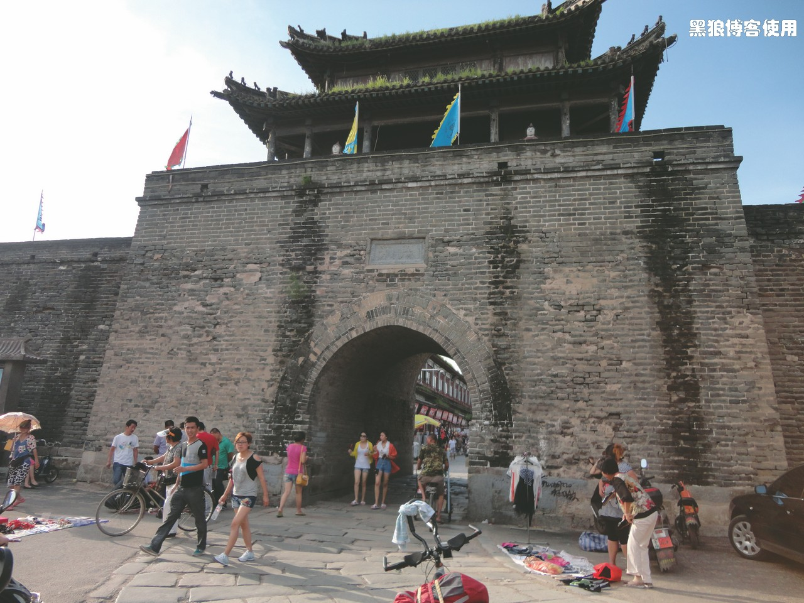

骑行长春（第三天，有些疲惫）
黑狼语录：
- 也许我只顾赶路，没有留意那些美丽的景色、幽静深远的村子、悠闲的人们，不过对我来说，这已经是最好的感觉，我喜欢路上的感觉。
- 为什么骑自行车，因为汽车太快、走路太慢。
从早上 6:30 开始收拾，到 8 点钟才走出宾馆。感觉比昨天要累。今天早上计划地图没有找到，不知道目的地，算了，今天没有目的地。
出门的时候，宾馆服务员说今天的天气很好。一出来，哇哇，暴晒，太阳非常的大，天空一点云彩也没有。眼睛有点睁不开，也不知道是不是没有睡好。
8:20 一看手机导航，哇，走了个锐角三角形，多走了一条边。

8:30 回到了 G102 国道。葫芦岛 120 公里，今天身体状况一般，看来葫芦岛比较靠谱。
40 分钟后，身体开始逐渐恢复到比较好的状态。
9:30 现在确实人满为患，本来想在野外上个厕所，居然全是民宅。骑了几公里，看到了个加油站，去了趟厕所，很爽，又用了些爽身粉，更爽。刚才上厕所，居然蹲一会儿就坚持不住，起来歇会再蹲，反复几次，搞定。已经骑行了 20.3 公里。

10:14 没有拍到 300 公里处的路牌，很是遗憾，补上一个333 的吧。
10:20 刚才休息了一会儿，吃了点东西，看了下股票，今天不错涨了，这只垃圾股套了我许久了。今天的腿明显不在状态，一上自行车，又酸又软。
现在已经养成了下车后习惯性的摸摸前后胎的习惯。不过车胎气都挺足，看来是我的腿出问题了。

11:00 骑行了 41 公里。前方正在修路，其他车辆绕高速。问了一下路政的人，自行车肯定是不许的，只能绕行沿海公里，我的天呀，至少 20 公里开外。
硬着头皮骑向断桥处


11:31 刚才非常艰难的通过了大桥。本来大桥正在修建，不让任何人通过。我说了半天好话，才让我从 1 米来高的小墙上把自行车抬过去，幸亏有个工人师傅帮我抬过去，要是我一个人，只能把自行车摔过去。非常感谢这位热心的师傅。

到了桥的尽头，我噻，停了辆翻斗车，又让我焦急万分，根本过不去。又一个师傅帮我把车子抬过去，再次非常感谢。
如果不从这个桥上通过，我中午就吃不上饭了，至少耽误 2 个多小时。

12:30 到达了绥中，现在跑了 63 公里，错过了吃饭的时间，赶紧路边找个吃饭的地方，吃点东西。
13:45 吃完饭，吃的还不错。吃饭的时候把腰板挺的很直，免得颈部受力，同时尽量不用屁股坐在凳子上，免得屁股受力，因为待会儿还有大用。
15:15 骑了 86 公里，休息了一会儿，体力有点恢复，又来了些爽身粉，爽！

15:25 离兴城还有 26 公里，已经跑了 88 公里。

15:55 一段急行军，到了 G102 的 400 公里处，骑了 99 公里。

马路对面的距离北京 400 公里的路牌
17:00 跑了 117 公里，到了兴城的古城墙。这个地方以前来过，在城门处拍了个照片，没有进去，还是抓紧赶路吧。
17:40 还有 10 公里就到葫芦岛了，今天就扎营在葫芦岛了。因为现在如果蹲厕所，估计要休息个 10 来回。跑在新铺的油板路上，新铺的路真是累呀。
大约 18 点钟，到达了葫芦岛。葫芦岛是以一个大下坡的方式来欢迎我的，真是体谅我呀。
今天总共骑行了 137 公里。
今天的坡路比较多，每个坡都要几分钟或者 10 多分钟，对体力消耗比较大，很累。早点睡觉，养精蓄锐。